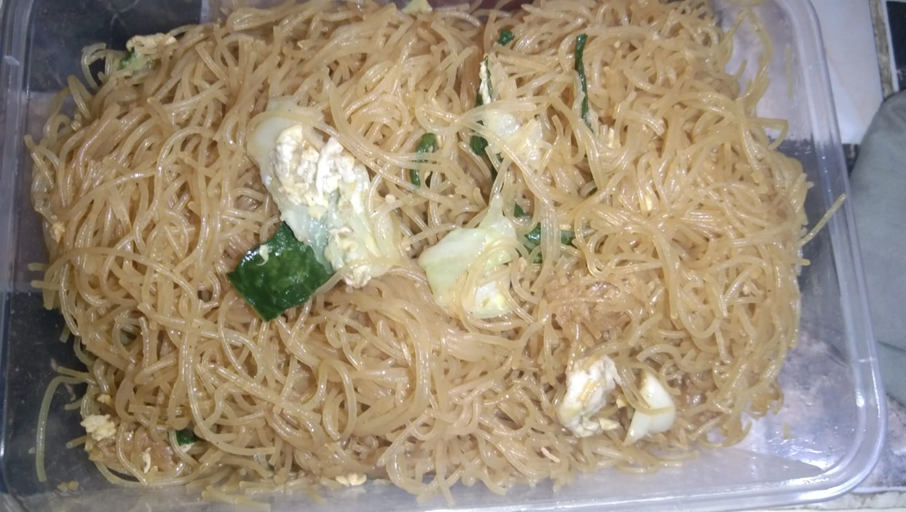
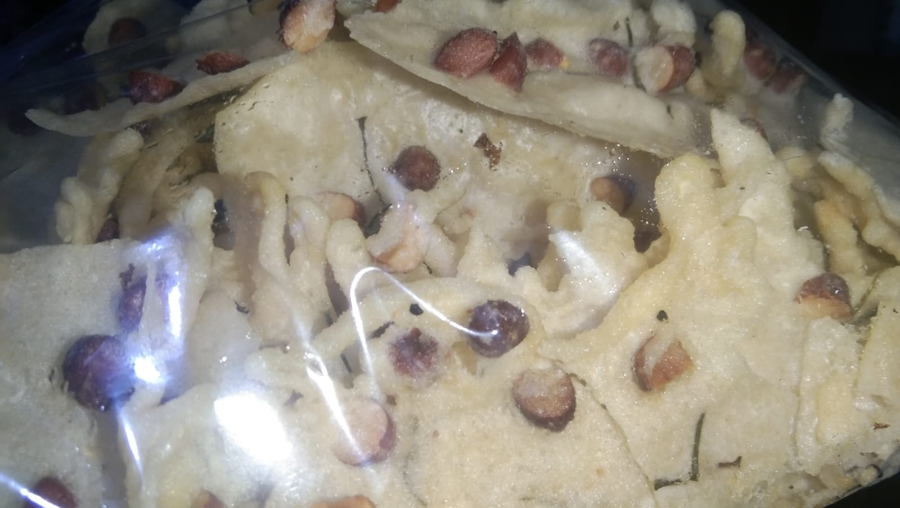

Seblak
Seblak, Makanan Khas Sunda yang Populer di Indonesia, Begini Cara Pembuatannya Sumber Artikel berjudul "Seblak, Makanan Khas Sunda yang Populer di Indonesia, Begini Cara Pembuatannya

Cinnamon Rolls
Sate ayam khas Madura yang terkenal dengan bumbu kacangnya yang gurih dan lezat.

BIHUN
Bihun Goreng Makanan Pelengkap yang Istimewa.

Peyek
16 Tips Bikin Peyek Enak Siap Jual, dari Pilih Bahan sampai Pengemasan

Kue Sus
10 Resep Kue Sus yang Cocok untuk Dijual, Ketahui Tips Anti Gagalnya